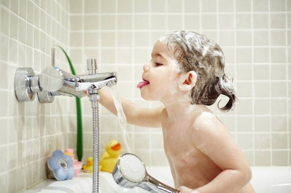

IMPORTANCIA DEL AUTOCUIDADO
¿Qué son los malos hábitos orales?
Las actividades para niños y niñas se definen como el fomento y la promoción de su salud física y mental, así como la prevención de enfermedades (Colegio de Terapeutas Ocupacionales de la Isla del Príncipe Eduardo, 2022; Organización Mundial de la Salud, 2014).¿Qué son los malos hábitos orales?
Entre las diversas actividades que cada persona puede realizar todos los días (según su rol emocional, cognitivo, biológico, social o profesional), se encuentran las actividades básicas de la vida diaria (ABVD), que forman parte del autocuidado porque son autocuidados. servicio. orientada al cuerpo, esencial para vivir en un mundo social que permita la supervivencia y el bienestar, es decir, aquellas cosas que incluyen las habilidades más necesarias y básicas de autocuidado: bañarse/ducharse, vestirse/desvestirse, comer, alimentarse, moverse equipo de cuidado personal, mudanza, aseo, higiene y cuidado, aseo y aseo, y cuidado de los intestinos y la vejiga.La independencia en las ABVD´s puede verse perjudicada y/o deteriorada si existe algún tipo de patología que afecte el funcionamiento físico del niño, incluido el funcionamiento cognitivo o psicológico. A medida que los niños crecen, tienden a "hacerlo todo solos", incluidas las actividades de cuidado personal. Sin embargo, a veces los niños crecen y aún necesitan apoyo continuo para realizar tareas funcionales de cuidado personal. Puede ser utilizado por padres, cuidadores y terapeutas. Diferentes niveles de instrucciones físicas, verbales y visuales para promover la independencia en las tareas de cuidado personal.
Aprender a cuidarse es el primer paso para desarrollar la independencia, ya que es una habilidad para la vida, y entre estas actividades se destacan:
Vestirse: aprender a vestirse de forma independiente les da a los niños y niñas una sensación de logro a medida que aprenden nuevas habilidades.
¿Cuál es la clave para enseñar el autocuidado desde pequeños?
● Nombra claramente las partes del cuerpo y explica la mejor manera de cuidarlas.● Fomente la confianza de los niños y las niñas para que hablen sobre lo que les está pasando.
● Promover un entorno seguro.
● Demostrar la sensación de bienestar que proviene del autocuidado.
● Disfrute de cosas saludables como caminar o comer una dieta balanceada.
● Enfatice lo que es especial acerca de cada niño.
● Crear lazos positivos convirtiéndose en un modelo a seguir para familias saludables y relaciones emocionales amables.
● Ayude a los niños a reconocer las señales de que nuestros cuerpos y mentes no están bien.
● Cree un ambiente relajado y de confianza en el hogar donde los padres y el niño puedan hablar.
● Disfrutar de los momentos de ocio como parte de un estilo de vida saludable.
● Al comprar o seleccionar múltiples configuraciones, aprenda cómo elegir alimentos más saludables.
● Alentar a los niños a hacer cosas que los deleiten: arte, deporte, música, danza ...
● Si lo necesita, debe saber cómo decir que no, y recuerde que no siempre tenemos que encontrarlo para todos.
● Adquirir sólidos valores humanísticos o morales, ayudar a los niños a posicionarse y tener un marco de referencia claro para la toma de decisiones.
¿Cuáles son los beneficios de promover el autocuidado de los niños?
● Mejorar la confianza en uno mismo y la autoestima.● Fomentar hábitos saludables.
● Desarrollo emocional adecuado.
● Prevención de la violencia sexual, incl. Toma decisiones claras.
¿Cuáles son los beneficios de promover el autocuidado de los niños?
● Consiga una hoja del tamaño del cuerpo de su hijo o hija, ya sea de periódico, papel de seda o cartón (pegue más si es necesario) y colóquela encima para que pueda dibujarlo.● Ponga el dibujo en la pared y pídale que busque las partes del cuerpo en las revistas, las recorte y trate de ponerlas en el lugar correcto.
● Cuando los encuentre, dígales lo que están haciendo y lo que necesita saber.
● También dile cuál es la parte pública, cuál es la parte privada o la parte privada, dile el nombre (la parte privada es la parte cubierta por la ropa interior).
● Luego tome fotos de ropa, incluso recortadas de revistas, y pídale que se las ponga en un dibujo que cubra las partes íntimas. De esta forma, aprenderás a reconocer las partes que nadie debe tocar,Porque te pertenecen.
Rutinas diarias de autocuidado
Para los niños y niñas, los hábitos de autocuidado que queremos enseñarles deben estar asociados a emociones positivas. Esto se puede hacer si encontramos formas para que los niños aprendan mientras se divierten.Cuidados personales
Aprender a cuidar de uno mismo es una habilidad esencial para la vida. Como padre/cuidador, pasa los primeros años alimentando, limpiando y cuidando a sus hijos. También le enseña a su hijo a hacer estas cosas por su cuenta.El baño, un momento feliz
Haz un juego para la hora del baño en el que tu hijo le hable a cada parte de su cuerpo y diga cuánto lo ama y cómo quiere cuidarlo. Y pon una canción sobre ese momento.Vestido y desvestido
Vestirse de forma independiente es una habilidad dinámica importante. Al aprender nuevas habilidades, esto hará de su hijo una sensación de logro.●Ayudar al niño físicamente. Pon tu mano sobre tu hijo y ayúdalo a vestirse.
● Muéstrele al niño. Vístete al mismo tiempo que tu hijo y dile cómo hacerlo.
●Dígaselo a su hijo. Muéstrele a su hijo estos pasos.
La alimentación
Enséñele a su hijo los hermosos colores que pueden tener los alimentos y pídale que sugiera qué alimentos se pueden mezclar según los colores para que el almuerzo sea tan sabroso como hermoso.En el caso de los humanos, todas estas actividades requieren de un proceso de coordinación entre el elemento cognitivo y el propio elemento motor.
Descanso y sueño
Niños y adolescentes Es importante asegurarse de que los niños y adolescentes duerman lo suficiente para que tengan suficiente energía para las actividades del día siguiente.Pautas y recomendaciones
●Divida la tarea en partes manejables. Hay diferentes formas de aprender; muéstrele a su hijo, dígale a su hijo, haga la tarea con su hijo.● Resolver problemas juntos: si cometen un error, en lugar de corregirlo, pregúntele qué debe hacer para solucionarlo.
●Haga ejercicio cuando tenga tiempo libre, como los fines de semana o las noches.